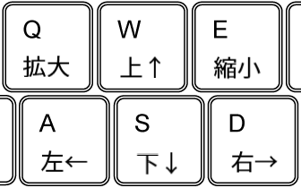

mini-window
概要
右の画像の黒丸の中には、それぞれ1つだけ白いピクセルがあります。10個全ての黒丸に対して、白いピクセルを選択する操作をしてください。
使い方
- 拡大したい場所を右クリックすると、小さなウィンドウが開きます
- ウィンドウ内で左クリックすることで、ピクセルを選択できます。1つのウィンドウ内では1個のピクセルだけ選べます。
- 開いたウィンドウの位置は、次のようにして調整できます。 
- 既にウィンドウが開かれた状態でも、右クリックで次のウィンドウを開くことができます。
右の画像の黒丸の中には、それぞれ1つだけ白いピクセルがあります。10個全ての黒丸に対して、白いピクセルを選択する操作をしてください。